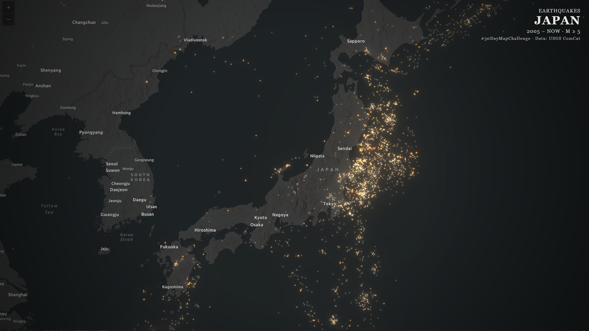

Web-based maps and applications built with Leaflet, ArcGIS Online, and more.

A collection of 30+ interactive web maps created during the November 2025 challenge. Each map follows a daily theme — from points and lines to hexagons, raster data, and projections — using Leaflet.js and a variety of open data sources.
View on GitHub →